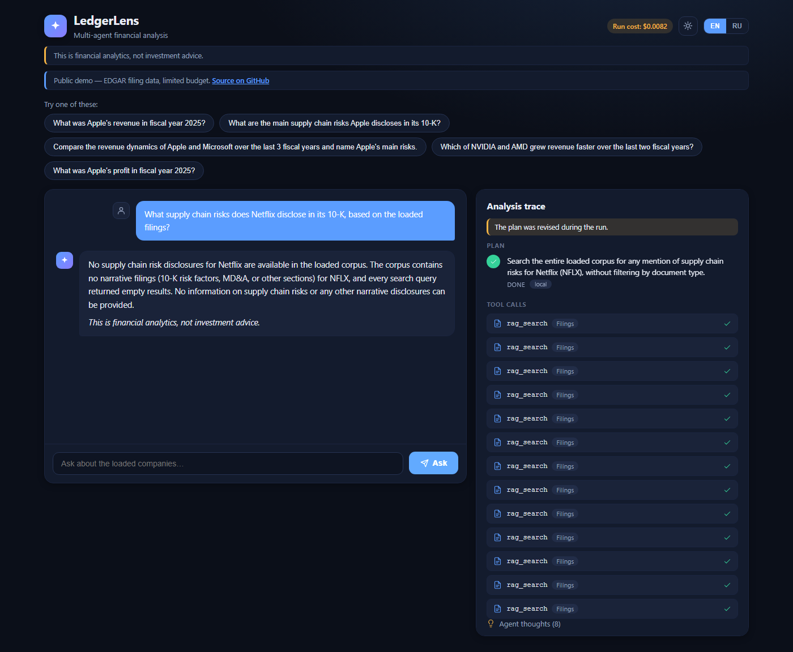
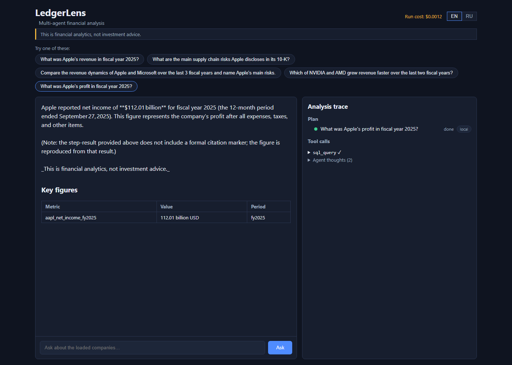

Eval-in-CI
A 41-case golden set gated in GitHub Actions with quality thresholds (faithfulness, citation coverage, guardrail, numeric accuracy).
eval.yml runs →Self-hostable · multi-agent · eval-gated
Ask in plain language. LedgerLens builds an explicit multi-step plan, its agents work over structured facts (SQL) and narrative disclosures (RAG), it self-corrects when a step comes back empty — and every claim carries a citation to the exact SEC / MOEX source.
The demo is public, rate- and budget-limited, and runs on a workstation backend exposed through a small VPS — it may be offline during maintenance.
The signature scenario: a step returns nothing, the orchestrator re-plans it in view, and the retry produces a cited answer. Reasoning streams first (AG-UI), so you see the analyst think.


sec.gov citations.
▶ A 60–90 s screen capture of this flow is in the pipeline.
A Plan-and-Execute orchestrator delegates to ReAct workers over A2A — one local, a second node pluggable via the same contract. Tools are MCP servers; the browser is fed by an AG-UI event stream. Hover a layer.
Hover a component for detail.
The parts that make this a system, not a demo — each with a proof you can open.
A 41-case golden set gated in GitHub Actions with quality thresholds (faithfulness, citation coverage, guardrail, numeric accuracy).
eval.yml runs →Workers speak the same A2A contract, so a second node is one config entry — round-robin with local-preferred failover. The public demo runs a single local worker.
T-031 · config/workers.yamlsql_query, rag_search and price_enrich run as MCP servers — swappable, contract-tested, callable by any agent.
T-027 · MCP servers + clientsCheap/local CPU for classify/extract/guard, cloud API for plan/synthesize — provider-agnostic behind one interface, with cost tracking.
inference benchmark →A non-advice guardrail blocks recommendation-shaped output, and a groundedness pass strips synthesis that isn't backed by retrieved context.
T-022 · T-041Every run's steps, tokens, cost, latency and local-vs-cloud split land in Postgres and surface in Grafana (read-only role).
Grafana quality board →Routing and storage choices are backed by live numbers, not vibes.
| Model | TTFT p50 | Cost /1k | Judge |
|---|---|---|---|
| deepseek-v4-flash | 0.74 s | $0.02 | 4.80 |
| deepseek-v4-pro thinking | 2.75 s | $0.23 | 5.00 |
Flash is ~10× cheaper and ~4× faster to first token — so it handles routing/extraction/guarding; the pro tier is reserved for planning and synthesis.
REPORT.md →| Store | Recall@10 | Latency p50 | p95 |
|---|---|---|---|
| pgvector (HNSW) | 1.000 | 43.8 ms | 47.9 ms |
| Qdrant (HNSW) | 1.000 | 4.15 ms | 16.9 ms |
Equal recall; Qdrant is markedly faster at query time and adds native hybrid (dense + BM25) — which is why narrative retrieval lives there while facts stay in Postgres.
REPORT.md →Clone, set a few env vars, and make demo brings up the full stack with data in minutes — no EDGAR round-trip needed.